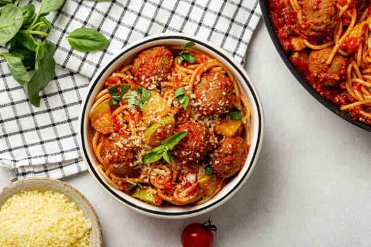

This classic pasta and meatballs recipe is a comforting and delicious meal that is perfect for any occasion. Here is a simple recipe to make it at home.

Note: You can customize this recipe by adding your favorite herbs and spices to the meatball mixture, or by using a different type of pasta or sauce.